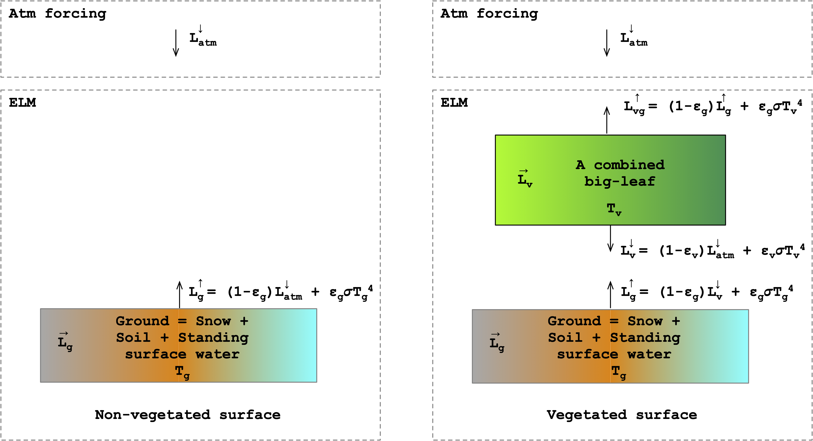

Overview
The longwave radiation module in ELM solves the amount of longwave radiation absorbed by the ground and the vegetation, and the amount of outgoing radiation to the atmosphere (Figure 1). The model represents the ground surface as a mixture of snow, soil, and standing surface water. The shaded and sunlit leaves are combined as a single leaf within the model. The incoming longwave atmosphere radiation, \(L^\downarrow_{atm}\), is a boundary condition for the model.

Fig 1. Two-stream longwave radiation model for (a) non-vegetated and (b) vegetated surfaces.
Governing Equations For Non-vegetated Surfaces
The emitted longwave radation from ground, \(L^{\uparrow}_g\), is
where \(\epsilon_g\) is the emissivity of the ground, \(\sigma\) is the Stefan-Boltzmann constant, and \(T_g\) is the ground temperature. The first term on the right-hand side represents the reflected atmospheric longwave radiation, while the second term represents the emitted longwave radiation by the ground. The emitted longwave radiation is computed as
where \(T_{sno,top}\), \(T_{soi,1}\) and \(T_{h2osfc}\) the temperature of the top snow layer, the first soil layer, and the standing surface water, respectively, and \(f_{sno}\) and \(f_{h2osfc}\) are fraction of snow and standing surface water. The ground emissivity is computed as the weighted average of soil and snow emissivity as
where \(\epsilon_{soi}\) is 0.96 for soil, 0.97 for glacier, and 0.96 for wetland, while \(\epsilon_{sno}\) is 0.97.
The radiation absorbed by the ground, \(\overrightarrow{L}_g\), is
Governing Equations For Vegetated Surfaces
The longwave radiation below the canopy, \(L_v\downarrow\), is
where \(\epsilon_v\) is the emissivity of the vegetation and \(T_v\) is the temperature of the canopy. The model assumes the sunlit and shaded leaves are at the same temperature. The first term on the right-hand side of the equation represents the transmitted atmospheric longwave radiation through the canopy and the second term represents the emitted longwave radiation by the canopy. The emissivity of the vegetation is
The upwelling longwave radiation from the ground is
where the \(T_g\) is given by equation \eqref{eqn:tg}.
Lastly, the upwelling radiation from the top of the canopy to the atmosphere is
The radiation absorbed by the vegetation, \(\overrightarrow{L}_{v}\), with positive value towards the atmosphere, is
The radiation absorbed by the ground with a positive value towards the atmosphere is
Temporal Discretization of Ground Temperature
The three components of ground temperature (i.e. \(T_{sno,1}\), \(T_{soi,1}\) and \(T_{h2osoi}\)) that contribute to the upward longwave radiation at the ground are coupled to the temperature of deeper snow and soil layers. This coupling of the temporally discretized equation of the surface energy balance (that includes absorbed shortwave radiation, \(\overrightarrow{S}_{soi}\), absorbed longwave radiation, sensible heat flux, \(H_{soi}\), latent heat flux, \(\lambda E_{soi}\), and ground heat flux, \(G\)) with the spatio-temporally discretized equations of the vertical heat diffusion model within the snow and soil layers leads to complexity. This complexity is discussed in Section 7.3 of Bonan (2019)1 and briefly summarized below.
Non-vegetated Surface
For simplicity, let's consider the non-vegetated case in which snow and standing are absent. In such a case, the ground temperature is the temperature of the first soil layer i.e. \(T_g = T_{soi,1}\). At the current time step \(n+1\), the absorbed longwave radiation given by equation \eqref{eqn:lg_net_nonveg} is a function of soil temperature at time \(n+1\), \(T_{sol,1}^{n+1}\), which is unknown. The ground heat flux at the top of the soil is given as
The vertical heat diffusion model in ELM uses the Crank-Nicholson temporal discretization method in which the fluxes between cells are computed as an average of the flux at \(n\)-th and \((n+1)\)-th time step. The top boundary heat flux (i.e. \(G\)) in ELM is computed only at \((n+1)\)-th time step and is linearized as
Thus, the temporally discretized net absorbed longwave radiation in Equation \eqref{eqn:G_bc_discretized} is
Comparing Equation \eqref{eqn:lg_net_nonveg} and \eqref{eqn:lg_net_nonveg2}, one can interpret the second term on the right hand side, \(4\epsilon_{soi}\sigma\) (\(T_{soi}^n)^3 \Delta T^{n+1}\), as an additional source of emitted longwave radiation. However, this term can only be computed after the vertical heat diffusion model is solved, i.e, after \(\Delta T_{soi}^{n+1}\) is known. Furthermore, this additional longwave radiation source term is added to the upward longwave radiation to the atmosphere given by \(L_g^\uparrow\) in equation \eqref{eq:lg_up_nonveg).
For the more general case, when snow and standing surface water are present on the ground, the temporally discretized net absorbed longwave radiation is
Vegetated Surface
The same coupling of the surface ground energy flux equations and vertical heat diffusion model leads to a similar model complexity and the temporally discretized net longwave radiation for vegetated given by equation \eqref{eq:net_lg_veg1} is
The additional apparent emitted longwave radiation represented by the second term on the right hand side of the above equation is not absorbed by the canopy and directly sent upwards to the atmosphere by adding it in \(L_{vg}^\uparrow\).
Temporally Discretized Governing Equations
For the sake of completeness and clarity, we list below the temporally discretized longwave equations used in ELM.
Non-vegetated Surfaces
The temporally discretized upwelling longwave radiation to the atmosphere and absorbed longwave radiation by the ground are
Vegetated Surfaces
When solving for \(T_v^{n+1}\), ELM uses a diagnostic heat model in which leaves have no heat capacity and the sum of net absorbed solar and longwave radiation must balance the latent and sensible heat energy. This leads to a nonlinear equation for the vegetation canopy temperature, which is solved iteratively. When the solution for vegetation temperature has been found after \(k\)-th iteration, \(T_v^{n+1,k}\), ELM uses a linear approximation of the non-linear term related to canopy temperature in the canopy emitted upward and downward longwave radiation equations. The linear approximation is as follows.
The temporally discretized downward longwave radiation by leaves is
The temporally discretized upward longwave from the canopy
The temporally discretized upward longwave from the canopy and ground to the atmosphere is
Note the \(T_v\) used in computing the net longwave radiation absorbed by the leaf given by equation \eqref{eq:net_lv} is \(T_v^{n+1,k}\) and it is not adjusted after the solution for vegetation temperature is found.
-
Gordon Bonan. Climate change and terrestrial ecosystem modeling. Cambridge University Press, 2019. ↩